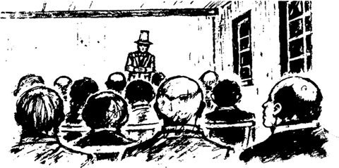
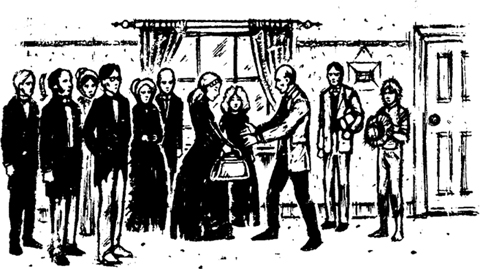

7

Kẻ lừa bịp
Tôi hỏi Công tước về tờ thông báo có thưởng bắt Jim.
Tôi hỏi: "Tại sao ông lại đăng tờ thông báo đó?"
Ông trả lời: "Chúng ta muốn di chuyển vào ban ngày, Huck". "Chúng ta sẽ dán tờ thông báo vào căn lều trên bè. Chúng ta sẽ trói Jim bằng một sợi dây thừng vào bè. Người ta sẽ thấy Jim và họ sẽ nhìn thấy tờ thông báo. Họ sẽ nói: "Những người da trắng tốt bụng này đã bắt được một nô lệ bỏ trốn. Họ sẽ đưa anh ta trở về với chủ của mình ở New Orleans." Sau đó, sẽ không ai ngăn chúng ta nữa.
Jim không vui về kế hoạch này. Anh ấy không muốn bị trói vào bè cả ngày. Nhưng tôi đồng ý với ý kiến của Công tước.
Chúng tôi đã không di chuyển bè vào đêm hôm đó. Sáng hôm sau, chúng tôi trói Jim bằng sợi dây thừng và lại tiếp tục lái bè ra giữa dòng.
Hai ngày sau, chúng tôi nhìn thấy một thị trấn lớn bên sông. Chúng tôi dừng bè ở đó. Thị trấn có hẳn một phòng họp. Phòng này có sức chứa hai trăm người. Công tước muốn sử dụng căn phòng đó vào tối hôm đó.
Ông nói: "Hai trăm người có thể ngồi trong căn phòng này".
Công tước tìm gặp chủ của phòng họp và trả tiền cho người đàn ông đó. Rồi Công tước cho chúng tôi xem một số thông báo. Ông đã in chúng tại văn phòng báo. Chúng tôi dán chúng lên các tòa nhà trong thị trấn.
SẼ CÓ
MỘT BUỔI BIỂU DIỄN HẤP DẪN
TRONG PHÒNG HỌP CỦA THỊ TRẤN
BUỔI BIỂU DIỄN NÀY
CHỈ DÀNH CHO NAM GIỚI
TRÊN 21 TUỔI!
GIÁ VÉ: MỘT ĐÔ LA!
Công tước cũng đã in những thông báo này tại văn phòng báo. Nhưng đây không phải thông báo có thưởng.
Công tước nói: "Chúng ta phải lên đường ngay đêm nay. Chúng ta phải chuẩn bị vào lúc chín giờ".
Tôi nói: "Nhưng buổi biểu diễn trong phòng họp của thị trấn sẽ diễn ra vào lúc chín giờ".
Công tước không trả lời tôi nhưng ông ta mỉm cười.
Tối hôm đó, Vua nước Pháp và tôi đứng gần cửa phòng họp của thị trấn. Có khoảng hai trăm người đàn ông xếp hàng. Tất cả đều muốn vào trong. Hầu hết họ đều đội mũ và quàng khăn. Chiếc khăn che đi phần dưới khuôn mặt của họ. Chiếc mũ che đi phần trên khuôn mặt của họ. Nhưng chúng tôi có thể nhìn thấy mắt họ! Đôi mắt họ sáng lên!
Mỗi người đàn ông đều đưa cho Vua một đô la. Sau đó, họ ngồi xuống bên trong căn phòng. Đúng chín giờ, Công tước đi đến phía trước căn phòng.

Ông nói: "Thưa các quý ông, buổi biểu diễn sẽ bắt đầu sau hai phút nữa! Và giờ chúng ta phải tắt hết đèn!"
Vài phút sau, căn phòng lớn chìm trong bóng tối. Những người đàn ông phấn khích đang háo hức chờ đợi buổi biểu diễn. Nhưng Vua, Công tước và tôi thì đang chạy về phía bè. Chúng tôi nhảy lên bè và tôi lái bè ra khỏi bờ.
Sau năm phút, có một tiếng ồn lớn phía sau chúng tôi trong thị trấn. Hai trăm người đàn ông tức giận đang hét lớn.
Chúng tôi đã di chuyển suốt đêm hôm đó và cả ngày hôm sau. Vua muốn đi thật xa thị trấn đó!
Công tước nói: "Chúng ta phải trả mười đô la cho căn phòng đó. Nhưng chúng ta đã lấy 205 đô la từ những người đó!"
Một sáng nọ, chúng tôi đến một thị trấn nhỏ ở bờ biển phía đông. Nơi đó có một cầu tàu dành cho thuyền. Những chiếc tàu hơi nước lớn dừng ở cầu tàu. Hành khách lên thuyền và xuống thuyền ở đó. Chúng tôi trói Jim bằng sợi dây thừng. Sau đó, chúng tôi nhảy khỏi bè và trèo lên cầu tàu.
Một chàng trai trẻ đang đứng trên cầu tàu.
Anh ta thấy chúng tôi và đi đến chỗ Vua nước Pháp và Công tước xứ Bridgewater.
Anh ta nói: "Tôi tên là Tom Collins. Thưa hai quý ông, hai người có phải là anh em của Peter Wilks không? Thưa ông, ông có phải là ông Harvey Wilks không?" anh ta hỏi Vua. "Và đây có phải là em trai ông, ông William Wilks không?"
Vua không nói không. Ông ta nhìn người đàn ông trong giây lát, rồi buồn bã nói.
Ông hỏi: "Anh có tin gì cho chúng tôi không?"
Chàng trai trẻ đáp: "Vâng, thưa ông. Đó là một tin buồn. Peter Wilks đã qua đời vào hôm qua. Ông ấy đã giải phóng nô lệ của mình vào buổi sáng và qua đời vào buổi chiều. Lễ tang của ông ấy sẽ diễn ra vào ngày mai. Ông ấy là một người tốt bụng.
Vua nói: "Vâng, ông ấy là một người tốt!" "Anh hãy kể cho chúng tôi nghe về cuộc sống của anh trai chúng tôi, Peter, ở thị trấn tốt đẹp này."
Vua là một người rất thông minh. Chẳng mấy chốc, chúng tôi đã nghe xong câu chuyện về cuộc đời của Peter Wilks.
Peter Wilks là người Anh. Ông đã đến Mỹ nhiều năm trước. Ông đã đến thị trấn nhỏ này. Ông đã kết hôn với một phụ nữ Mỹ và họ đã có ba cô con gái. Peter Wilks có hai người anh trai, Harvey và William, nhưng họ vẫn ở lại Anh. Harvey là một mục sư. William bị điếc và câm - ông ấy không thể nghe và không thể nói.
Vài tuần trước, Peter Wilks đã trở nên rất ốm. Sắp đến lúc ông qua đời. Ông đã viết thư cho anh trai mình ở Anh. Ông muốn họ đến Mỹ. Vợ ông đã mất. Ông muốn anh trai mình chăm sóc các cô con gái của ông.
Tom Collins kết thúc câu chuyện của mình. Anh ta nói: "Peter muốn anh trai mình được thừa kế tiền của mình sau khi ông qua đời".
Đột nhiên, Vua mỉm cười buồn bã.
Vua nói: "Cảm ơn anh vì tin này, anh chàng trẻ tuổi". "Vâng! Tôi chính là Harvey Wilks. Đây là em trai tôi, William". Ông ta chỉ vào Công tước. Rồi ông chỉ vào tôi. "Và đây là người hầu của chúng tôi, Huckleberry".
Tôi mỉm cười với anh Collins, nhưng tôi không nói gì.
Vua nói: "Chúng tôi không đến đây trước khi Peter qua đời. Thật đáng buồn! Chúng tôi sẽ đến nhà ông ấy ngay bây giờ".
Tom Collins chỉ vào nhà của Peter Wilks. Rồi anh ta lên một chiếc tàu hơi nước. Chẳng mấy chốc, anh ta đã đi mất.
Nhiều hàng xóm của Peter Wilks đang ở trong phòng khách ngôi nhà của ông. Và ba cô con gái của Peter cũng ở đó. Cô gái lớn nhất, Mary Jane, mười chín tuổi. Susan mười lăm tuổi và Joanna mười bốn tuổi.
Vua cố gắng nói bằng giọng Anh. Đó là một giọng nói kỳ lạ. Người Anh nói như vậy sao? Tôi không biết! Công tước không nói gì. Ông ta không cần phải nói. Ông ta phải giả làm người điếc và câm!
Vua nói với các cô gái: "Các cháu là cháu gái của chú, Harvey". "Chú là một mục sư". Rồi ông ta chỉ vào Công tước. Ông ta nói: "Và đây là chú William của các cháu". "Chú ấy không thể nói được. Nhưng chú sẽ nói thay chú ấy".
Mary Jane hỏi: "Còn đây là ai?" Cô chỉ vào tôi.
Vua đáp: "Đây là người hầu của chúng chú, Huckleberry". "Cậu ấy là người Mỹ", Vua nói. "Nhưng cậu ấy đã là người hầu của chú trong nhiều năm. Tất cả chúng chú sẽ ở lại đây vài ngày".
Thi thể của Peter Wilks được đặt trong một quan tài gỗ lớn trong phòng ăn của ngôi nhà. Các cô gái đưa chúng tôi vào phòng. Quan tài mở nắp. Nắp quan tài nằm bên cạnh cánh cửa, dựa vào tường. Tất cả chúng tôi đều nhìn vào trong quan tài.
Vua nói với thi thể của Peter Wilks: "Tạm biệt, anh trai thân yêu của tôi". Vua khóc. Và Công tước cũng khóc.
Chúng tôi quay trở lại phòng khách. Rồi Mary Jane rời khỏi phòng. Một phút sau, cô quay lại với một chiếc túi nặng. Cô đưa nó cho Vua.

Cô nói: "Bây giờ, chú sẽ chăm sóc chúng cháu, chú ơi". "Đây là tiền của cha. Có 6000 đô la trong chiếc túi này. Cha muốn chú có số tiền này".
Tôi nhìn Mary Jane. Cô ấy có mái tóc đỏ rất đẹp. Tôi rất quý cô ấy. Tôi bắt đầu lo lắng về kế hoạch của Vua. Mary Jane tin tưởng chúng tôi. Tôi không muốn lừa dối cô ấy. Nhưng tôi đã không nói gì.
MỤC LỤC
- Tựa đề
- Nội dung
- Ghi chú của tác giả
- Tóm tắt truyện ngắn này
- Nhân vật trong truyện này
- Chương 1. Nhà văn không hiểu biết hết mọi chuyện!
- Chương 2. Ngôi nhà gỗ giữa rừng
- Chương 3. Hai kẻ đào tẩu
- Chương 4. Trên bè gỗ
- Chương 5. Quyết định
- Chương 6. Ông vua và ông hoàng
- Chương 7. Những tên lừa bịp
- Chương 8. Chiếc quan tài
- Chương 9. Anh trai nữa!
- Chương 10. Tom Sawyer
- Bản quyền